ENSIMMÄINEN VIIKKO

26.5.
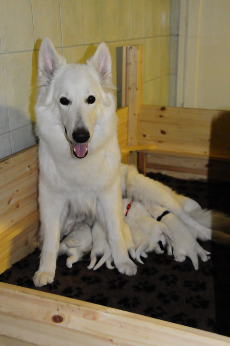
Niin on pentujen elämän ensimmäinen viikko vierähtänyt pentulaatikossa Nellin hellässä hoidossa. Kasvuvauhti on ollut valtavaa, vauvat ovat lähestulkoon tuplanneet syntymäpainonsa näiden 7 päivän aikana!
Nelli viettää edelleen suurimman osan päivästä pentulaatikossa. Selvästikään se ei osaa siellä nukkua kovin syvää unta, sillä välillä se tulee johonkin jalkoihini ja nukahtaa samalla hetkellä kun makuulle käy. Sellaista se on se äitinä oleminen; unen puute vaivaa ilmeisesti myös koiraäitejä!
1-viikkoissynttäreiden kunniaksi otettiin jälleen henkilökohtaiset kuvat lapsista, mutta koska tällä kertaa en saanut kuvaustilanteeseen apua, jouduin kuvaamaan pennut maassa. Ja sen nyt tietää, että kovin ryhdikkäitä ilmeitä ei vielä näistä sillä tavalla saanut kuviin vangittua. Taisivat nukkua suurin osa kuvaustilanteessa! :-)
Mutta tässä ovat potretit viikon ikäisistä B-lapsista:
PENNUT 1 VIIKON IÄSSÄ
TYTÖT
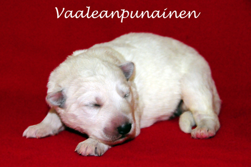
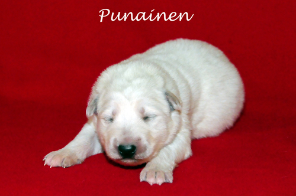
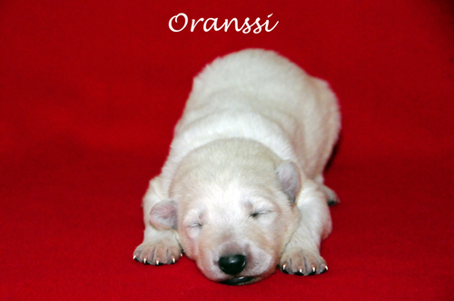
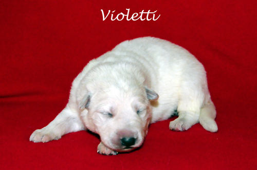
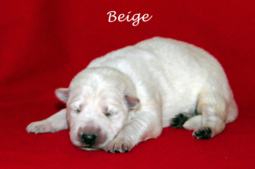
POJAT
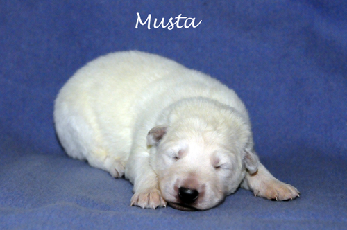
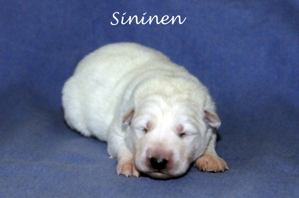
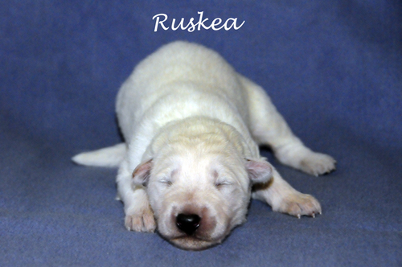
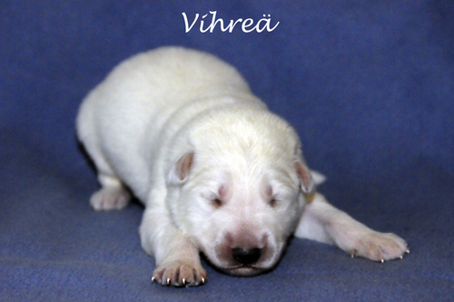
Heh, kuvissa pennut näyttävät aivan identtisiltä tässä vaiheessa! Mutta uskokaa vaan; en ole kuvannut vain yhtä pentua yhdeksää kertaa vaan kyllä kuvissa on aina oikea pentu! :-)
25.5. perjantai
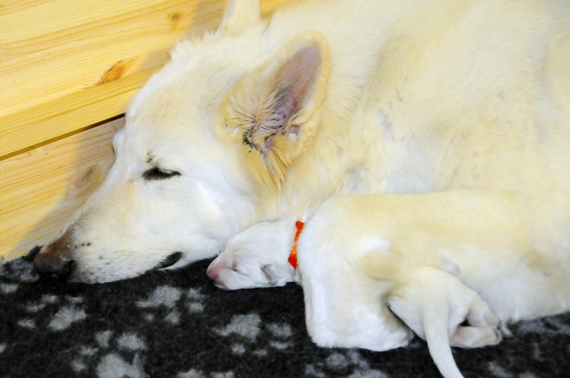
Täällä pentulaatikon reunalla viikko on jatkunut varsin rauhallisissa merkeissä; syödessä ja nukkuessa. Vieraita en ole tällä kertaa päästänyt tämän ensimmäisen viikon aikana pentuja ihailemaan, joten Nelli on saanut rauhassa viettää äitiyslomansa alkua vauvojen kanssa. Pentujen painot ovat nousseet tasaisesti, en ole muulla tavoin kuin punnituksin lainkaan seurannut että kaikki varmasti saavat osuutensa ruokailuista. Kaikki pennut ovat niin tomeria, että pitävät kyllä puolensa, vaikka välillä käykin jo melkoinen kiljuminen kun parhaista ruokailupaikoista sisarusten kanssa taistellaan.
Ja kyllä tuo pikkuisten kasvuvauhti ja kehityksen nopeus jaksaa vaan aina yllättää!
Yllä: Oranssi tyttö äidin kainalossa 23.5. Alla: Beige tyttö päiväunilla myös 23.5.
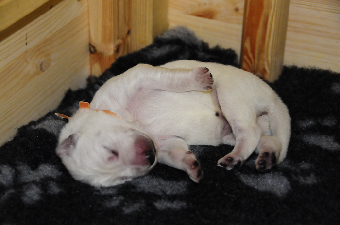
Tänään perjantaina sitten pennut saivat upouudet pannat kauloihinsa! Naureskelin itsekseni, että on se koiran elämä melkoista, kun ei vielä silmätkään ole auenneet niin jo laitetaan pantaa kaulaan! :-)
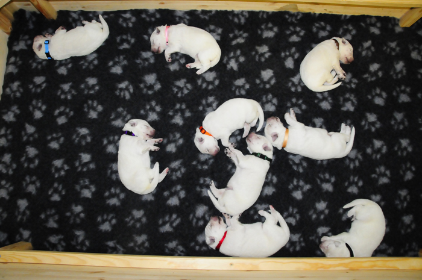
Tälle pentueelle ostin ihan tällaiset pentuepannat silkkinauhojen tilalle, koska ne silkkinauhat eivät nyt niin kauhean käteviä etenkään isommille pennuille sitten ole. Pikkuiset pannat olivat jo nyt pienimmilleen säädettynä ihan sopivia vauvoille, joten ei muuta kuin pannat kaulaan!
Kuvassa oikealla väsyneet lapset upouusissa pannoissaan pentulaatikossa.
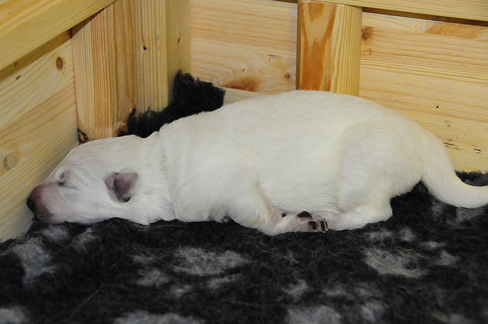
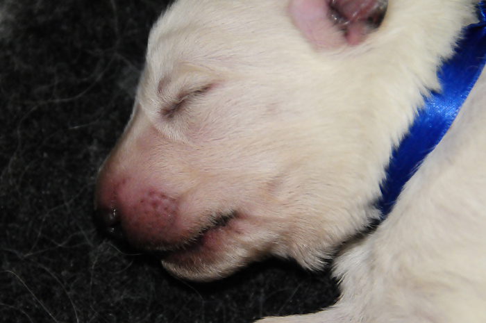
Parin viime päivän aikana Nelli on viettänyt jo aika paljon aikaa muuallakin kuin pentulaatikossa; pienet palloleikit ulkona ihanassa kevätsäässä on jo otettu ja pieniä metsälenkkejäkin tehty. Nelli on selvästi huomannut, että jos meinaa levätä hetken vauvanhoidosta, on parasta poistua laatikosta, koska muuten ainakin pari pentua on koko ajan tissillä ja ainakin muutama muu on vailla huoltotoimenpiteitä; pissitystä ja kakkapyllyn pesua. Tunnollisesti Nelli kuitenkin edelleen äidinvelvollisuutensa hoitaa.
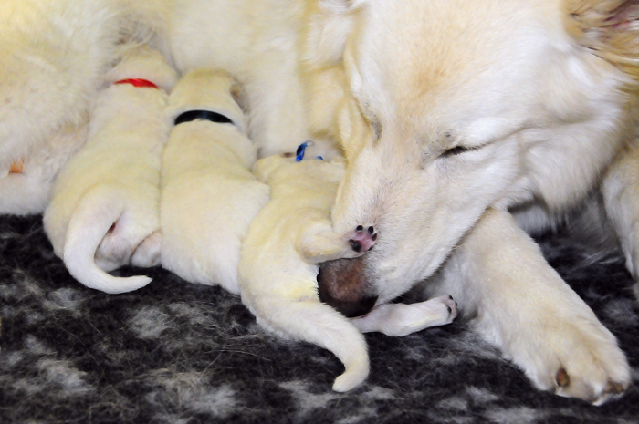
22.5. tiistai
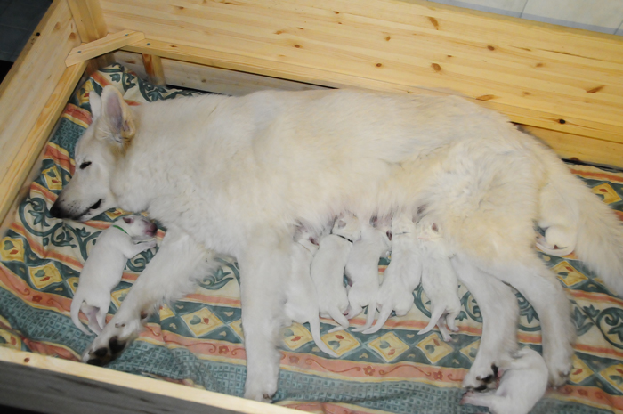
Pentujen ensimmäiset vuorokaudet ovat kuluneet, yllätys yllätys, syödessä ja nukkuessa! :-) Nelli oli pari ensimmäistä päivää melkoisen väsyneen oloinen; se hoiti kyllä pennut mutta muuten lähinnä nukkui toimien maitobaarina vauvoille. Sunnuntaina ei meinannut oikein ruoka alkaa maistumaan, ja näinkin jo itseni syöttämässä 9 pentua 1-2 tunnin välein pullosta jos Nelliltä maito paastoamisen takia loppuu! Sitten keksin hakea kaupasta pari grillattua broileria, Nellin ehdotonta superherkkua, ja niinhän alkoi ruoka jo maistua. Ensin vain broileri, sitten broileri ja neu ja nyt kelpaa jo ihan mikä vaan. Onneksi! Näin kolme päivää synnytyksen jälkeen Nelli syö hyvin 3 ateriaa päivässä ja vauvat kasvavat kovaa kyytiä.
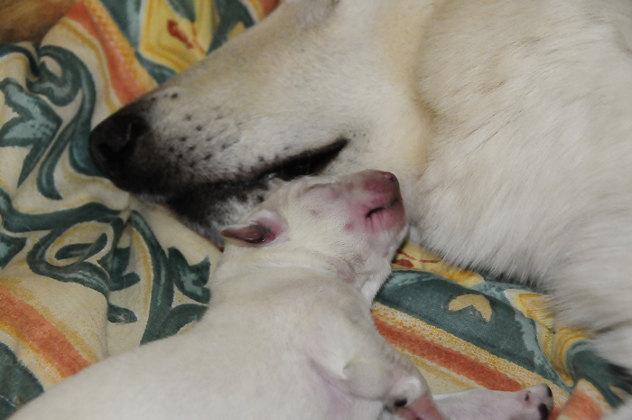
Nelli ja vihreä poika maanantaina 21.5.
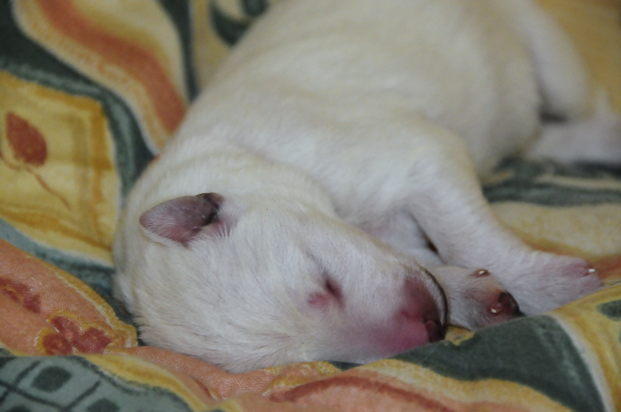
Leikkasin pentujen kynsiä ensimmäisen kerran jo eilen, 2 vuorokauden iässä! Ne olivat teräviä kuin neulat ja pennut "kaivavat" Nelli-paran mahanalustaa ja tissejä niillä innokkaasti imiessään, joten ajatelin hiukan sääliä Nelliä tässä kohtaa.Parin synnytyksen jälkeisen päivän aikana Nelli ei ole juuri kotipihasta poistunut; pienellekin lenkille takametsään se on pitänyt lähes pakottaa. Mennessä se kulkee 10 metriä perässä ja kotiin päin tultaessa 10 metriä edellä... kiire on kova vauvojen luokse. Ulkoilu ja pienikin liikkuminen tekee tosin hyvää niin mielelle, ruumiille kuin ruokahalullekin, joten hiukan koitetaan ulkoillakin. Pennut kyllä pärjäävät vartin ilman äitiäkin, Nelli vaan ei ole vielä ihan varma siitä.
Kuvissa yllä ja alla pentuja maanantaina 21.5.
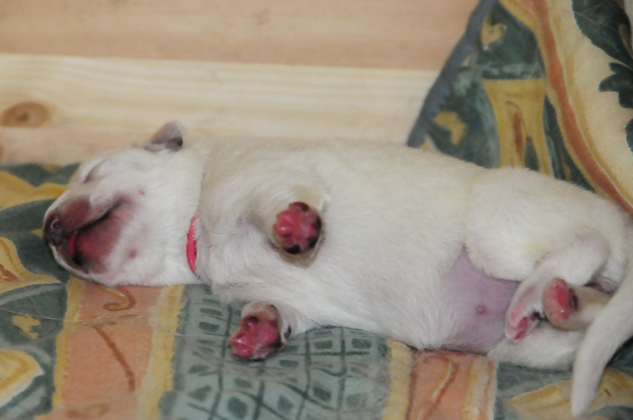
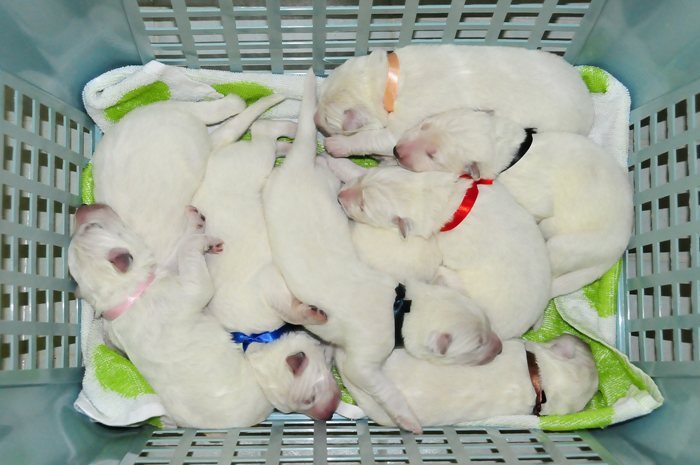
Tänään, pentujen ollessa 3 vrk ikäisiä, jäivät niille kaulaan heti syntymän jälkeen laitetut kumilenksut jo pieniksi! Eli aamulla siirryttiin pentulaatikossa silkkinauha-aikaan! Värit toki pysyivät kullakin pennulla samoina, ei aiheutettu siis identiteettikriisiä kenellekään! ;-)
Samalla aloitettiin pennuille Bio Sensor-ohjelman tekeminen. No, huutoahan siitä tietysti tuli, kun kasvattaja kääntelee pikkuisia pää alaspäin ja seläleen ja laittaa vielä jääkylmälle pyyhkeelle! Nelli oli tämän toimituksen ajaksi laitettava ulos, koska se oli aivan varma että aikomukseni oli vähintäänkin kiduttaa pikkuiset hengiltä.
Kuvassa oikealla: pyykkikorikansaa 3 vrk iässä :-D
Ja sitten illalla olettiin vielä ihka ensimmäiset potretit jokaisesta pikkuisesta! Eli tässä he ovat:
PENNUT 3 VRK IKÄISINÄ
TYTÖT
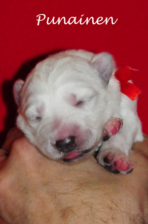
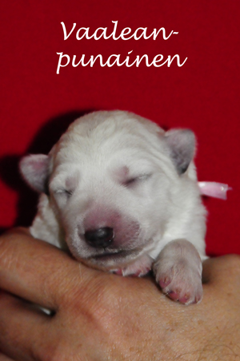
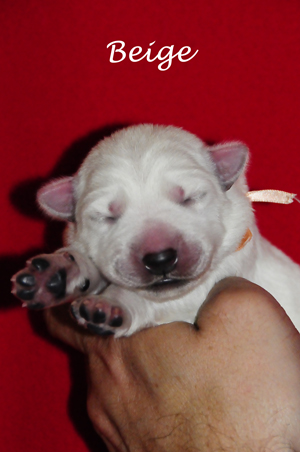
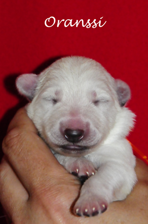
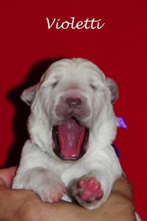
POJAT
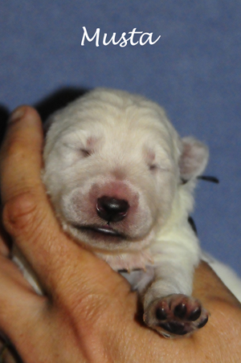
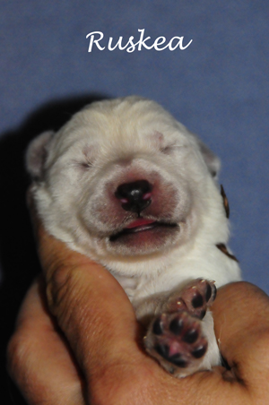
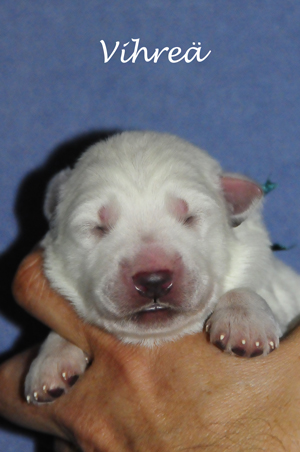
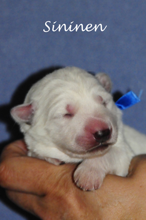